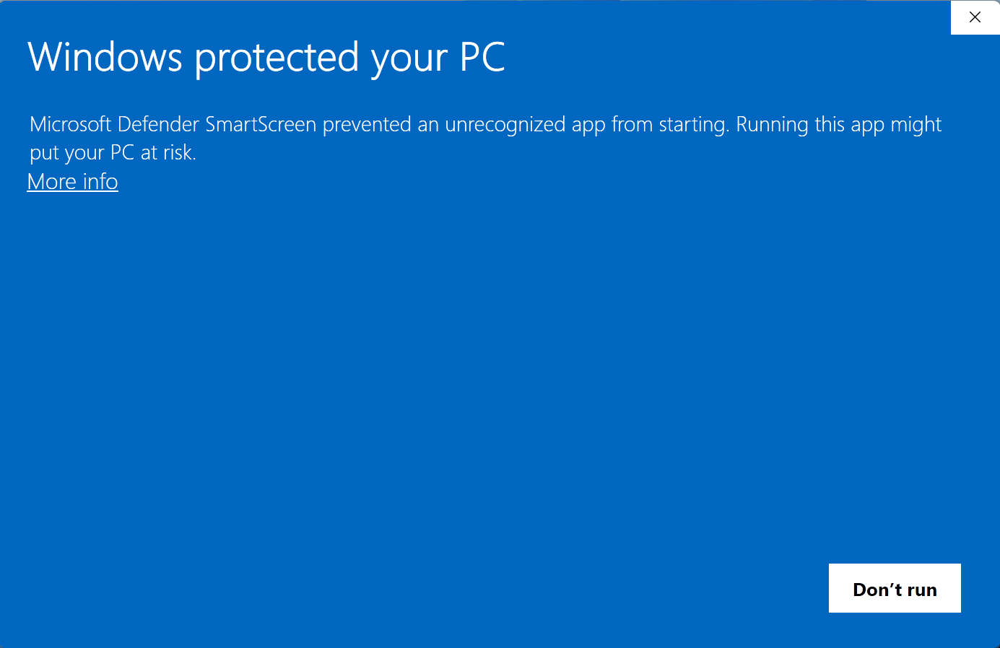
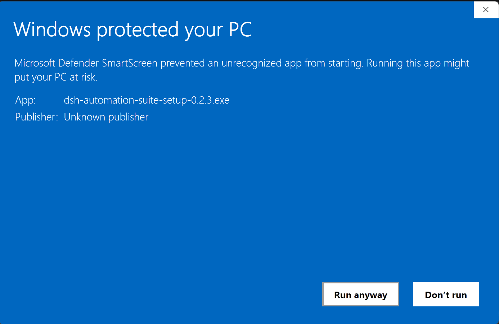
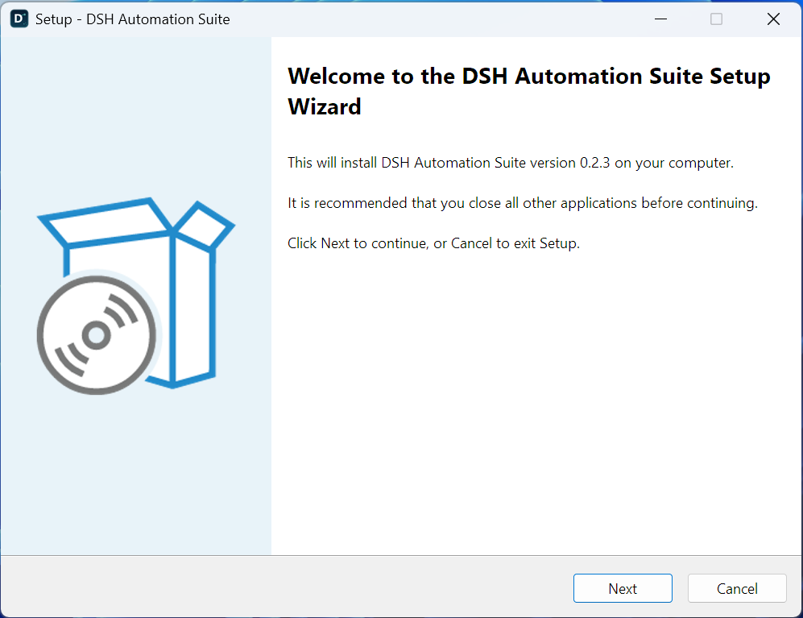
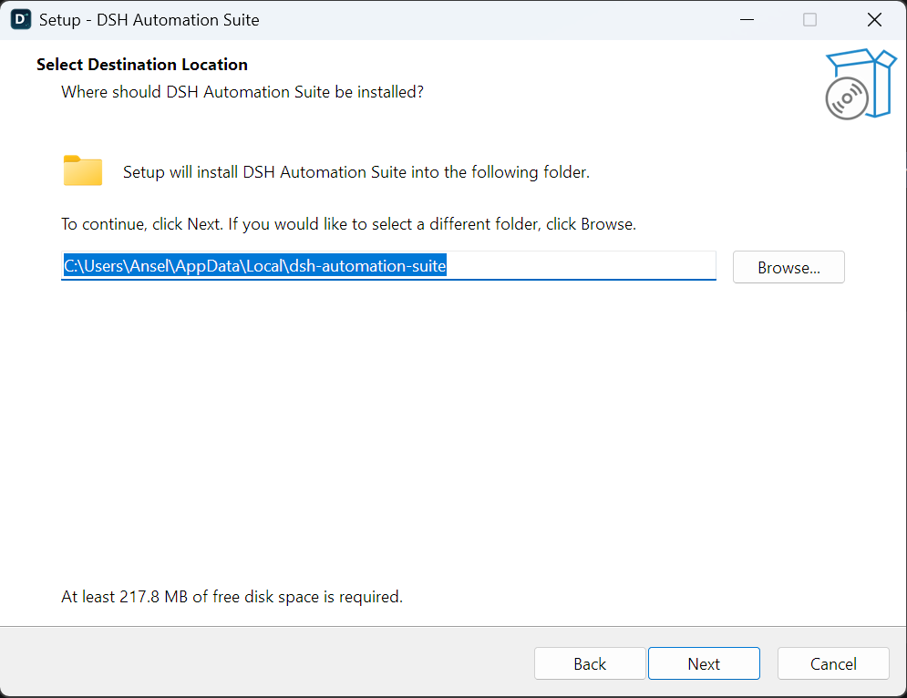
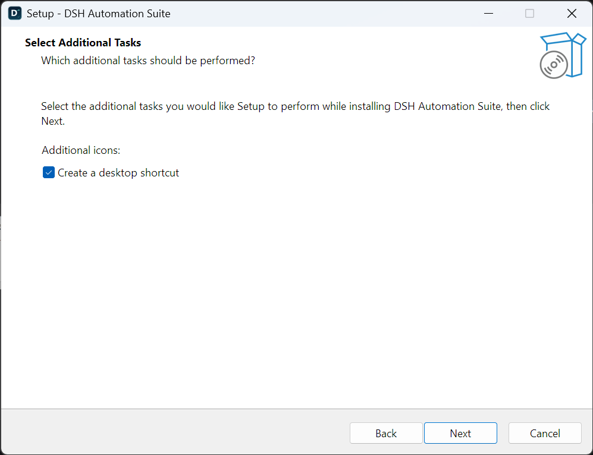
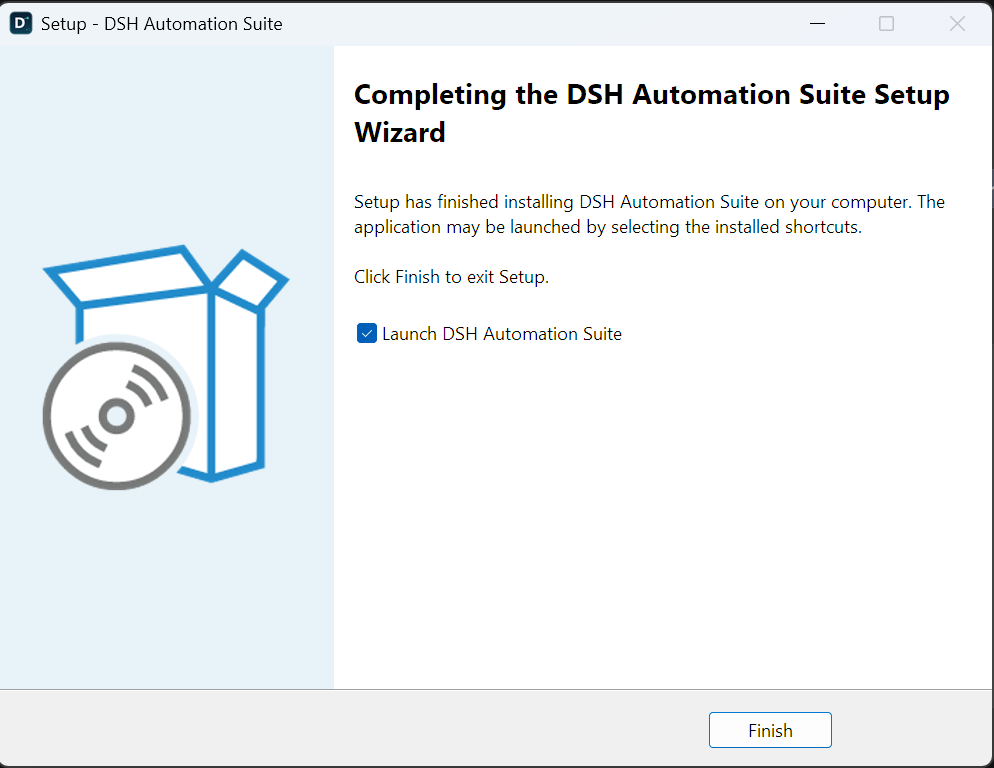
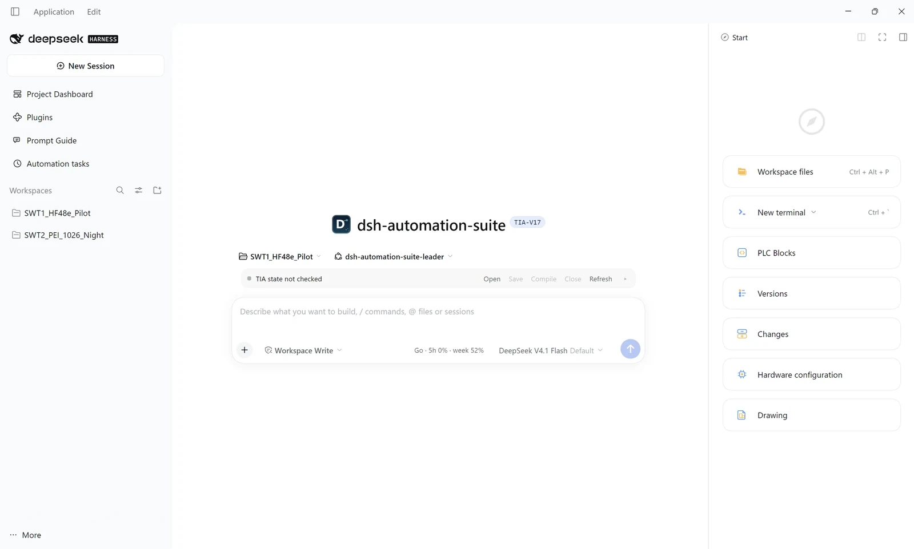
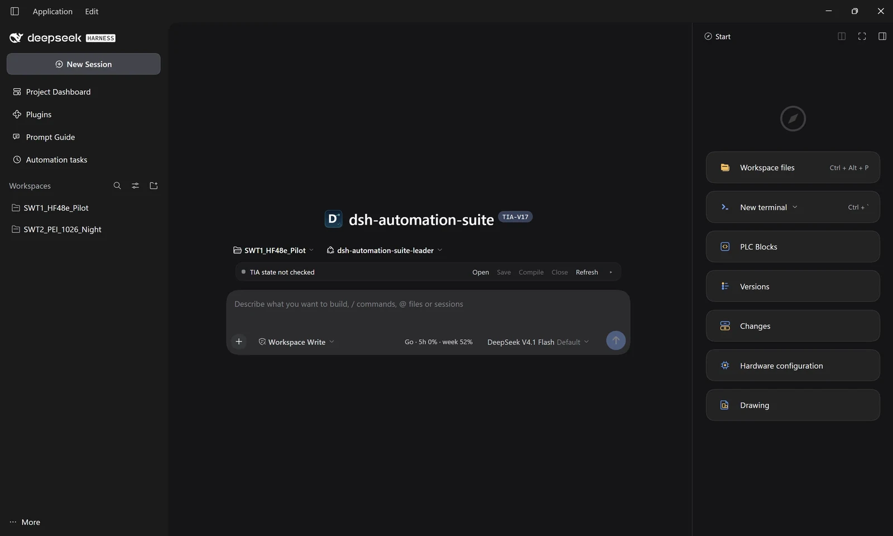
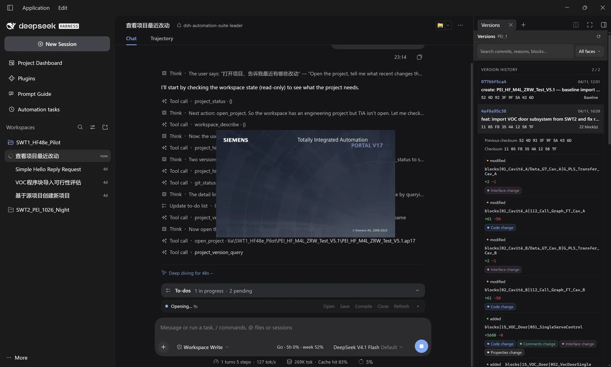
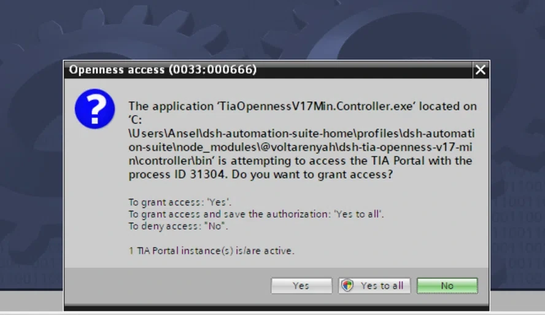

A
Release zip
No build, no Node; installs into a versioned profile under %USERPROFILE%\dsh-automation-suite-home and starts DSH from a console. Needs an installed DSH.
Get started
One setup for most people: the desktop app. Three alternates for special cases — the release zip, the repository starter, or a single bundle. All run the same blueprint in an isolated DSH_HOME.
01
The suite runs on DSH. The desktop setup installs what is missing; only the TIA and PLCSIM tools need Siemens software.
Excel and PDF support is pure JavaScript/WASM — no Microsoft Office or Acrobat install. The only desktop software this suite calls is TIA Portal, PLCSIM Advanced and Git.
02
Recommended since 0.2.3: one setup exe, per-user, no Node, no console window. The wizard installs the WebView2 shell, a pre-built profile and the doctor, and downloads DeepSeek Harness and WebView2 first if either is missing.
Download the installer from the GitHub Releases page: open the latest release and, under Assets, pick dsh-automation-suite-setup-<version>.exe. The walkthrough below starts once you run that file.
Download dsh-automation-suite-setup-<version>.exe from Releases and run it. The binary is not code-signed, so Windows stops it once with the SmartScreen dialog below — “Unknown publisher” is expected here, not a sign of tampering.

Click More info, check that the app is dsh-automation-suite-setup-<version>.exe with publisher “Unknown publisher”, then click Run anyway. If you want certainty first, compare the published SHA-256 with Get-FileHash.

The wizard names the version it is about to install and asks you to close other applications. Nothing has been written yet; the close button leaves the machine untouched.

The default is %LOCALAPPDATA%\dsh-automation-suite — per-user, no administrator rights, removable through Windows Settings. The profile ships with its node_modules already materialized, so setup needs about 218 MB; the stable shell, the versioned app layer, install.json and the uninstaller all live here.

%LOCALAPPDATA%\dsh-automation-suite, at least 217.8 MB free.A desktop shortcut is the only optional task; the Start-menu entry is always created. Next starts the copy. If DSH or WebView2 is missing, the wizard then runs a PowerShell step that downloads the official package (DSH is about 300 MB) and verifies its SHA-512 and DeepSeek signature before installing it — that is the only part that needs a network. Afterwards it copies the fixed profile into dsh-automation-suite-home, merges any older overrides and runs doctor.

Leave Launch DSH Automation Suite checked and click Finish. The app window opens with the suite profile already active — there is no console window to keep open.

A WebView2 window with the same 40 px title bar as the DeepSeek Harness desktop app — Application and Edit menus on the left, window buttons on the right, the suite preset and its five right-hand tabs already loaded. There is no address bar and the shell never depends on your browser. Theme and language follow the app's own settings, as the two thumbnails below show.


A session in progress: the model runs the TIA tools one by one (project_status, workspace_describe, open_project, project_version_query, git_status), the chat shows its planning and the to-do list, and the Versions panel renders the last two commits with every changed block and whether the change touched the interface, the code, the comments or the block properties. This is the shipped UI, not a mockup.

The setup never bundles the DSH runtime: it reuses what you have, or fetches the official package from download.deepseek.com. A DSH newer than the verified 0.2.1-rc.2 is allowed after a warning; one older than 0.2.1-rc.1 is refused rather than overwritten. On an offline machine, install DSH and WebView2 first — after that the wizard works without a network, because nothing is fetched from npm.
03
Same blueprint, different packaging. Use these when you cannot run an installer, want the current worktree, or need a single bundle.
A
No build, no Node; installs into a versioned profile under %USERPROFILE%\dsh-automation-suite-home and starts DSH from a console. Needs an installed DSH.
B
For development. Runs the current worktree; needs Node 22.19+ and the pnpm bundled with DSH; -Mode pack tests the real tarballs.
C
Advanced. Every package is its own bundle; install its tarball and add the matching /tools row when it has one.
$ .\install.cmd
$ .\start.cmdDownload dsh-automation-suite-<version>.zip from Releases and extract it first. Double-clicking the two .cmd files works too; install.cmd avoids the PowerShell execution-policy block on downloaded scripts.
$ git clone https://github.com/voltarenyah/dsh-automation-suite
$ cd dsh-automation-suite
$ pwsh -NoProfile -File scripts\start-env.ps1The starter builds the packages, materializes the profile in %USERPROFILE%\dsh-automation-suite-home, links the local packages, starts dsh and opens the tokenized URL. Use -Mode pack to test the release tarballs and -Restart to replace a running instance.
$ dsh plugin --profile web add <tarball-url>TIA, PLCSIM, graph and git expose model tools only after a /tools row is added; engineering-context also needs TIA and git at runtime. This path is for advanced users — the Architecture page has the surface matrix.
These three paths assume DeepSeek Harness is already installed: the zip installer exits with an error if it cannot find dsh.cmd. Only the desktop setup can fetch the runtime for you.
04
From an opened window to a working session.
The desktop shell starts DSH for you and loads the tokenized URL into its own window; the zip path prints dsh web: http://127.0.0.1:<port>/?token=… in the console instead. Either way the token is required and changes on every start — the bare port returns 401, so do not share the URL.
Settings → Models, or the first-run prompt. The release profile defaults to dsh-opencode-go / deepseek-v4.1-flash; add that provider's key or pick another model. Credentials stay in this DSH_HOME.
Point at the project folder. The left sidebar is a registry stored in DSH_HOME, not a scan of the disk, so every workspace is added explicitly; since 0.2.3 the picker is the app's own directory surface, not the Windows folder dialog.
TIA: open or create a project and make a read-only call. Graph: create_engineering_project should report a built database; “not built” often means .NET 8 is missing — install Microsoft.DotNet.Runtime.8. Git: run git --version.
The window's close button hides it to the tray and the app — TIA controller included — keeps running; use Application → Exit or the tray's Exit to stop everything. On the zip path, closing the console stops the service and start.cmd starts it again. Sessions, workspaces and credentials persist either way.
The first tool call that touches TIA is gated by Portal itself: “Openness access (0033:…)” asks whether TiaOpennessV17Min.Controller.exe — the controller under the profile's node_modules — may attach to the running instance. That dialog is Siemens', not the suite's, and there is no silent bypass. Yes grants the current session only; Yes to all also saves the authorization in the V17 whitelist (HKLM\SOFTWARE\Siemens\Automation\Openness\17.0\Whitelist), which is what stops the prompt coming back after a rebuild or an upgrade — writing it needs an elevated TIA. No makes the call fail: retry and allow it.

The default requestTimeoutMs is 300000 (5 minutes). Exporting a few hundred blocks already takes about 87 s, and compiling a large project can take more than 10 minutes. Raise it in the profile patch (or the matching settings row) before the first large TIA or graph call.
- id: tia-openness-v17-min
config:
requestTimeoutMs: 900000
- id: engineering-graph
config:
requestTimeoutMs: 900000The same value bounds a single-device graph build; a 1,376-file project took about 30 s, but large projects deserve the headroom.
05
The things that most often go wrong, and the safe way to undo.
| Topic | What to know |
|---|---|
| DSH runtime | The desktop setup reuses an installed DSH at or above 0.2.1-rc.1 and downloads the official runtime when it is missing, checking SHA-512 and the DeepSeek signature. The zip installer only finds an existing dsh.cmd (or DSH_EXE). |
| SmartScreen | Neither the setup exe nor the zip scripts are signed. For the setup: More info → Run anyway. For the scripts, use install.cmd / start.cmd (they set a process-level bypass and pause on errors); running install.ps1 directly may close before you can read the error. |
| Two roots | Desktop: app files in %LOCALAPPDATA%\dsh-automation-suite, user data in %USERPROFILE%\dsh-automation-suite-home with the fixed profile name dsh-automation-suite. The zip path uses the same home with a versioned profile. Nothing is written to ~/.dsh. |
| Upgrade / rollback | Desktop: exit the app, then run the next setup over the old one — the shell is replaced, the app layer gets a new versioned folder, and the fixed profile's cordis.patch.yml overrides are backed up as .bak-<timestamp> and merged. Web zip: each version gets its own profile, so start the older one to roll back. |
| Uninstall | Desktop: Windows Settings → Apps → DSH Automation Suite removes the shell, the app layers and the shortcuts; dsh-automation-suite-home is kept. Delete user data with cmd /c rmdir /s /q "%USERPROFILE%\dsh-automation-suite-home"; never use a recursive delete that follows junctions. |
| External runtimes | The shell needs Evergreen WebView2 (the setup installs the bootstrapper when it is missing). Only TIA and PLCSIM need Siemens software. The graph needs .NET 8; git needs git.exe; Excel/PDF need no Office or Acrobat. TIA and PLCSIM licensing is yours. |
| Network / proxy | The desktop setup needs GitHub for the download and download.deepseek.com for DSH/WebView2 when they are missing — never npm, because the profile ships materialized. The zip path needs GitHub and npm; on an isolated network, mirror the registry or pre-stage the tarballs. |
| Ports | The shell starts DSH with an OS-assigned free port (--port 0), so there is nothing to configure — the window loads whatever port was picked. The zip path's start.cmd picks 3093+ automatically instead; it also accepts -Port, and -NoOpen suppresses the browser. |
| Desktop shell | 0.2.3 ships the WebView2 shell and the per-user installer: Start-menu entry, optional desktop shortcut, tray, single instance, logs reachable from the tray's Open logs. There is still no auto-update — upgrade by running the next setup. |
| Security | Treat the tokenized URL as a secret; it grants the session. Keep DSH_HOME out of source control — credentials and sessions live there. |